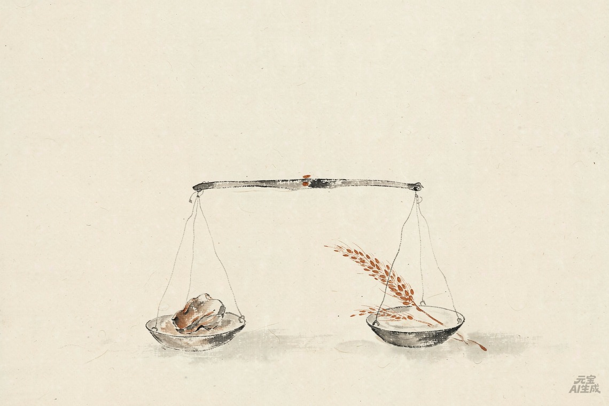
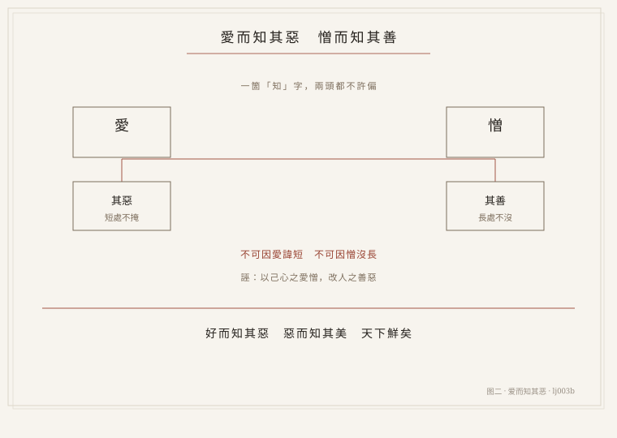

第三课 爱而知其恶 憎而知其善
曲礼上 · 一·四 · 第 3 课
一 解题
上一课说对贤者当如何，这一课说对所有人当如何——尤其对你不喜欢的那个人。
说什么事：说爱与憎对判断的干扰。爱一个人，会看不见他的短；恨一个人，会看不见他的长。
落在哪一层：义。此句无仪可循，只立一条认识上的规矩。
为何编在此位：狎敬、畏爱立的是「近人」的分寸；近人之后，紧接着就是偏心。偏心是近人的必然副产物，所以此句必须紧随其后。
二 经文
【经】愛而知其惡，憎而知其善。
三 字义与句读
知 知不是听人说的「知道」，是心里真看见了。郑注下一「诬」字，正点出：看不见，就是以己意改事实。
惡 读如字，指其短处、其可议处。不是「恶人」之恶。
其 两「其」同指一人，不是两个人。此句要的是同一个人身上善恶并见。
郑注的分量 「謂凡與人交，不可以己心之愛憎，誣人之善惡。」——「凡與人交」四字把范围放到了所有人；「誣」字是全句的眼：以爱憎代事实，不是偏，是诬。偏是看法不正，诬是拿看法改事实。
四 今译
喜爱一个人，也要看得见他的短处；憎恶一个人，也要看得见他的长处。
五 章旨
爱不掩其短，憎不没其长——判断不许被情改。
六 礼义
第一层 知是难事 人对自己喜欢的人，不是不知道他有短，是不肯把它说成短：那叫「脾气」，叫「个性」，叫「有原则」。同一样东西放在憎的人身上，就叫「毛病」。郑注用「诬」而不是「偏」，正因为此：事实已被改过一遍，只是改在心里。
第二层 知非口说 「知」若只停在嘴上，反成伤人的武器：知其恶，便随时举出来；知其善，便随时用作人情。此句要的是判断的准，不是话的利。
第三层 与今日何干 今日信息越碎，偏心越容易被加固：同一条事，喜欢的人在做的叫「努力」，不喜欢的人在做的叫「作秀」。此句不给中庸，只给一条硬规矩：先把「他做了什么」与「我对他什么感觉」分开，再说话。
七 分寸与边界
- 不可把「知其恶」读成随时揭人之短。知是判断，不是许可证；礼的门是「规过」有时、有地、有对象。
- 不可把「知其善」读成替人回护。知其善是承认事实，不是替他掩过。
- 不可把此句做成乡愿式的两面话：见面说好，背后说坏——那不是「并见」，是「两套」。
- 不可只要求自己对别人如此，不要求别人对自己如此；此句是双向的规矩，不是单向的宽容。
- 不可把「知」当作不动声色的高明。该说的规劝仍要说，此句管的是「看见」，不管「沉默」。
八 存疑
- 「恶」字之读 一读为「短处」（本课所取），一读为「恶行」。郑注「誣人之善惡」并举善恶，似指人之品性全体，不限于小短。本课取「短处」为下手处，同时承认其可扩至大节。
- 是否只对「交」言 郑注说「凡与人交」，范围是交往之人；若对不相交之人（如公议人物），此句是否同用？本课以为同用，但郑未明说，入此备考。
- 知而后如何 经文只说到「知」，未说知后当如何。古注有以「知」为用人、交友之准者，有以为只是自修者。本课取「先准判断，后议行止」。
- 与「爱而知其恶」相对的次序 先爱后憎，是否暗含「爱易偏、憎易刻」两层病各有所重？郑注未分，本课不分。
- 此句与《大学》「好而知其恶」 《大学》「好而知其恶，恶而知其美者，天下鲜矣」，文近而语异；二者是否同源，不可考。
九 跨典
- 《大学》：「好而知其恶，恶而知其美者，天下鲜矣。」——同一义而更断然：不是难，是「鲜」。
- 《论语·卫灵公》15.23：「君子不以言举人，不以人废言。」——不以人废言，即「憎而知其善」的另一种说法。
- 《论语·里仁》4.3：「唯仁者能好人，能恶人。」——能好能恶，须先能知其善恶；此为仁者之能，非众人之易。
- 《礼记·表记》：「君子不以色亲人。」——以色亲人者，正犯「爱而不知其恶」。
十 双卡
| 爱而知其恶：喜欢的也叫毛病 |
憎而知其善：不喜欢的也认长处 |
| 偏：看法不正 |
诬：拿看法改事实，更重 |
| 知是判断，不是许可证 |
知而不说，也是一种失 |
| 双向的规矩 |
不是单向的宽容 |
十一 图

图一 · 天平两端，朴石与谷穗持平 · lj003a（作者供图）

图二 · 爱憎两端，各见其反 · lj003b